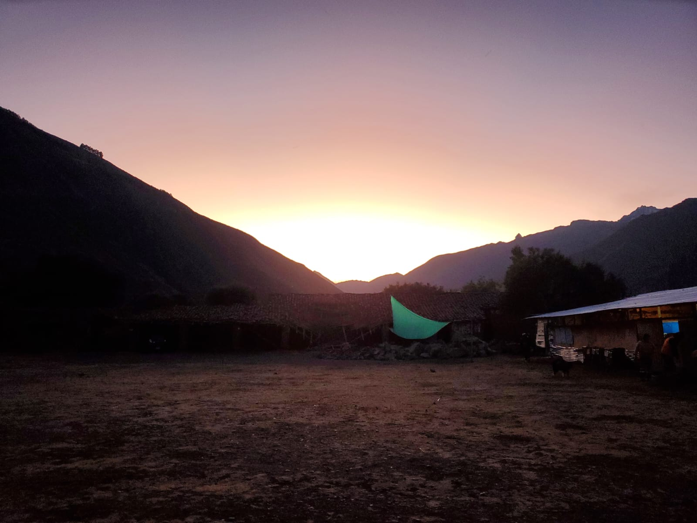
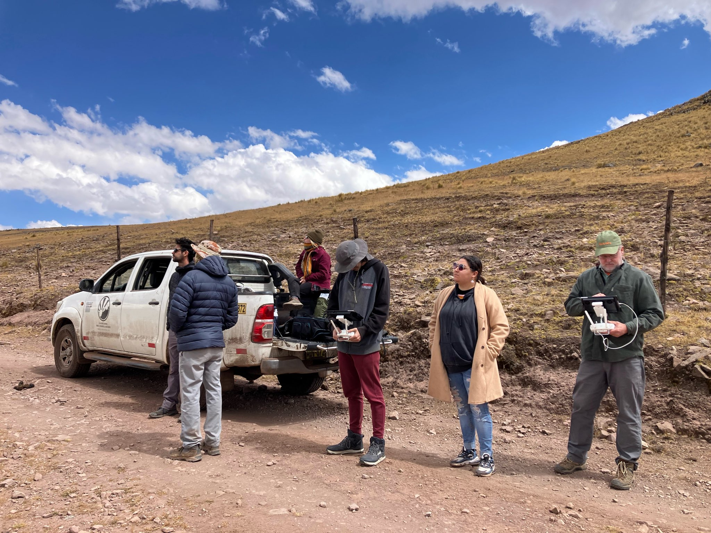
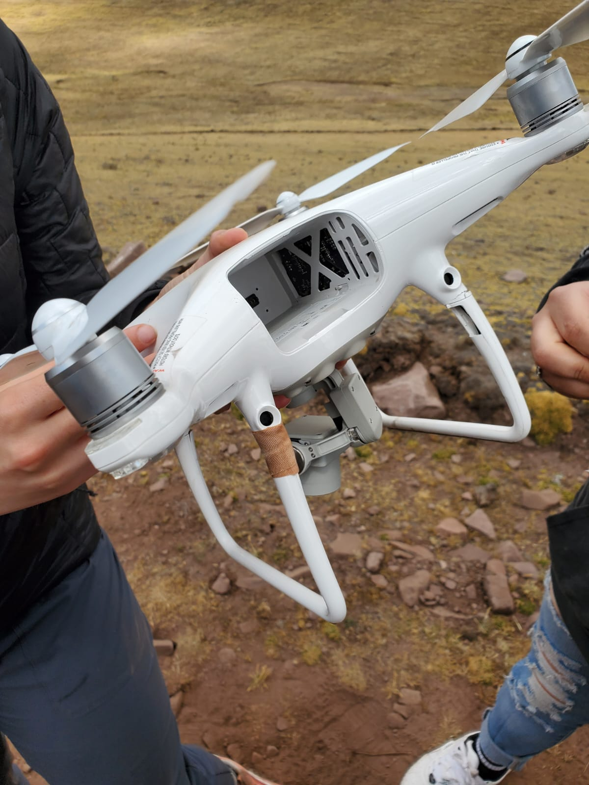
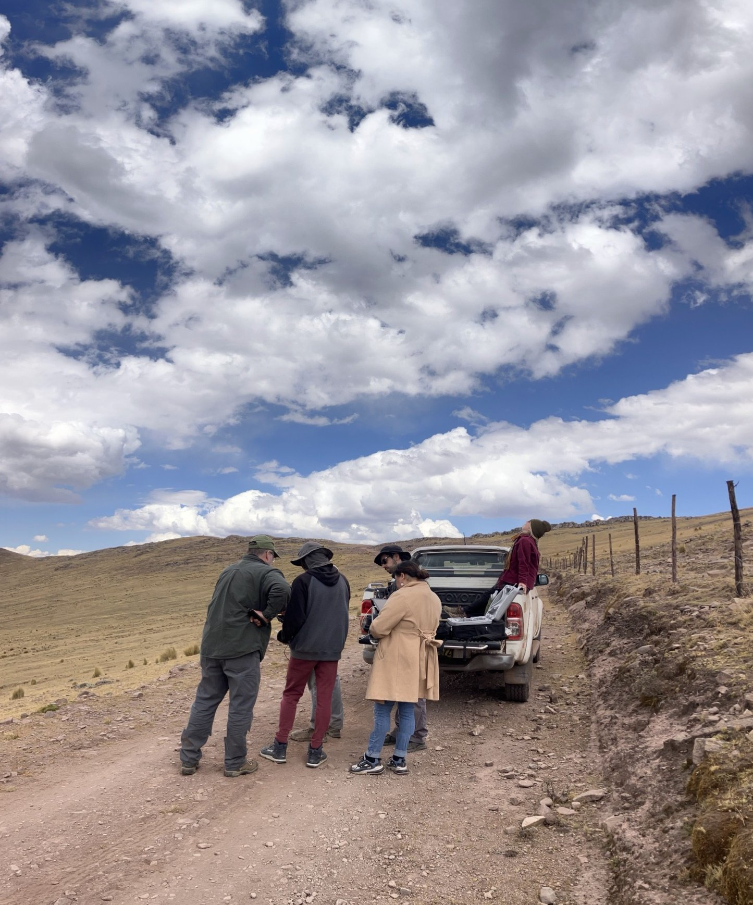

I'm Sam S. I'm a junior CS major in college, and I love programming. From the point I started programming in batch around age 10, I pretty much knew I wanted it to be my career. I've been programming different projects in dozens of languages almost constantly since I started. I like all kinds of programming, but embedded systems is quickly becoming my favorite.
Here are my favorite...
Outside of programming, here are some other hobbies I have:
I love working on my car to maintain and upgrade it. One day I'd like to build a car from scratch. Factory Five makes a kit that's a beautiful replica of a Shelby Daytona Coupe. One day I'd love to order all the parts and build one myself. There's something really special to me about cars. The best cars are a perfect combination of art and engineering, of form and function, that produce a visceral and raw experience on the road.
This is a newer hobby of mine, and one that I still have a lot to learn about. I always thought of radio as just a way to talk at a distance, but it can be so much more than just that. There are dozens of radio modes that allow things like p2p networking, sending images, and even connecting to the internet, all through the radio. Even with a $25 software defined radio and a homemade antenna, I've been able to hear people as far away as South America and Europe. With a VHF radio, you can even sometimes talk to the astronauts on the ISS.
I've been doing electronics projects about as long as I've been coding, and they often intersect. It's especially cool to program something and see your work leave the computer in some physical way.
I love languages. Over the years I've learned little bits of lots of languages to varying degrees. The only one that really stuck was Spanish, since it was the only one I could practice in real life. I really like the Russian language though, and hope I can learn it to fluency someday. I can read the Latin and Cyrillic alphabets comfortably, and I know some Hiragana, Katakana, Devanagari, and Arabic, but they're a bit rusty. It's so strange hearing sounds and seeing symbols, knowing they mean something to someone, but they might as well be gibberish to you.
I've always been fascinated by space: the stars and planets themselves, and the engineering that allows us to escape Earth and go to them. I never knew how much was possible with a telescope. The moon and planets seem obvious, but there are also beautiful nebulae, galaxies, and star clusters to see. Pictures are nice, but seeing it with your own eyes is something special. Looking at the Orion nebula, knowing that those photons have been traveling for 1,000 years before they hit your eye is trippy to say the least.
This is something I want to do more of. I've only been out of the country once, but it was incredible. A few summers ago, I went to Calca, Peru on an engineering trip. Peru is an amazing country, and we got do some really interesting work there. This trip was with the Andian Alliance, a local group that works with the community to design thoughtful, impactful service-learning projects. Over the course of two weeks, our group flew drones over a small town to make a detailed aerial map to help with community planning. As one of the only people in the group with good Spanish skills, I also got to make real use of my Spanish, which was awesome. Here are some photos from the trip:
